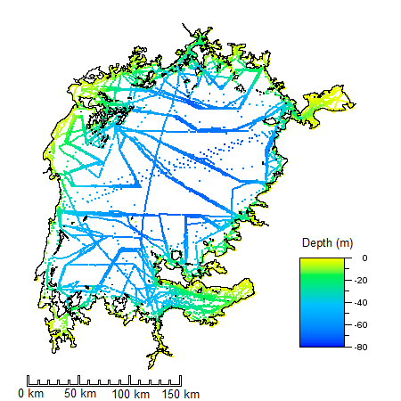
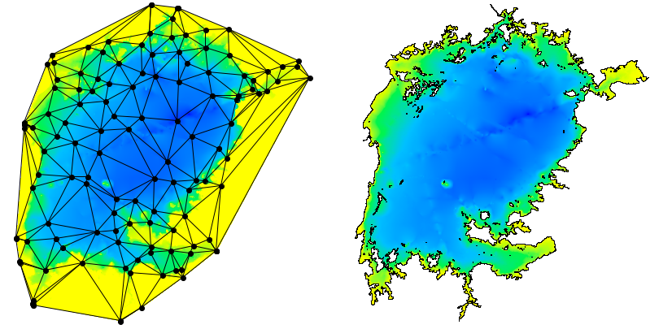
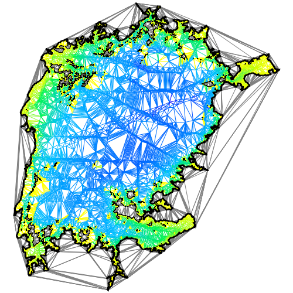

Using the Delaunay to Compute Lake Volume, Part 1
In this article, I will show how to use a Constrained Delaunay Triangulation (CDT) to compute the volume of an enclosed body of water such as a lake or reservoir. While computations of this type are usually performed using other methods, the approach described below provides a good illustration of the uses and versatility of the Delaunay. As a test subject for this discussion, I will use two sets depth soundings and digitized shoreline data for Lake Victoria in Africa. The first data set was posted by Greg Silsbe (Silsbe, 2015) at the website Lake Victoria Shapefiles. The second data set was assembled by a team from Salisbury University and includes over 4 million soundings.
The example code that I use in this article is available in the Tinfour software distribution in the class LakeVolumeExample.java.
Note: This article makes frequent references to the Delaunay Triangulation and the Constrained Delaunay Triangulation. Readers who would like to get more background on these topics, may do so by searching the web or by looking at the two introductory articles at the wiki pages: An Introduction to the Delaunay Triangulation and What is the Constrained Delaunay Triangulation and why would you care?
Bottom depth data for a body of water is usually collected using GPS-disciplined Sonar systems. But, because much of the information in the Silsbe data set comes from older sources, I suspect that it may have been painstakingly collected using lead lines (dropping a weight on a line overboard, letting it hit bottom, then measuring the length of line to determine depth). Information about depth measurements is usually referred to as bathymetry. Traditionally, cartographers used soundings to draw contour maps by tracing out lines between depth measurements to indicate the general depth of water masses. With the advent of computers, it has become common to use interpolation techniques to produce grid products. But many older data products are available solely as digitized contours. While volume computations are generally performed using contours or grids, I prefer to go straight to the source. After all, a contour map is a derived product that is often interpreted by eye or poorly understood computer programs. As such, using contours adds one more layer of potential error to the estimation process. And grid techniques are subject to resolution and interpolation issues that can also affect the accuracy of the calculated depth and surface area for bodies of water. On the other hand, bathymetry data in the form of soundings is a natural candidate for treatment using a triangular mesh to organize and interpret the data. And using a Triangulated Irregular Network (TIN) based on the Constrained Delaunay Triangulation permits us to make an estimate of the lake's volume that is close to the limit of accuracy for the collected data source.
The Lake Victoria Shapefiles data set contains 12679 soundings. Considering that Lake Victoria is the world's second largest fresh water lake (by surface area), that's a rather sparse collection of samples. The image below shows the distribution of the soundings from the data set. The "track lines" showing the path taken by survey vessels collecting the data are readily apparent. The image also reveals large gaps in the coverage of the samples. The shoreline data is a completely different kind of information product than the bathymetry. For one thing, it is far more dense and probably more accurate. It was also prepared using a completely different methodology than the soundings. Most likely, it was digitized from paper maps, aerial photographs, and conventional survey records. But despite the differences between these two products, it turns out that we need both kinds of data to make an effective estimate of lake volume. I'll provide more details about that below.
Both the soundings and the shoreline data for this project were extracted from Shapefiles, an industry standard widely used in Geographic Information Systems (GIS). Shapefiles can store data in different coordinate systems, including latitude/longitude or other representations of positions on the Earth's surface. Fortunately, the data in the Lake Victoria sample was stored in a projected coordinate system that effectively flattened the Earth and transformed the geographic coordinates of the soundings (the latitudes and longitudes) to a Cartesian (x,y) coordinate system measured in meters. The details of the technique aren't relevant to this tutorial, except to note that the coordinate system used for both depth and position coordinates has a uniform standard of measure (technically, the coordinates are isotropic). Because the three dimensional data has a uniform metric, we can use them to perform geometry-based calculations such as volume and surface area using simple algebra with no special scaling or spherical geometry considerations.
While we can build a Delaunay Triangulation using just the soundings as an input, the soundings by themselves are not sufficient to make a good estimate of lake volume. To see why this is so, consider the two images shown below. The image on the left shows a Delaunay Triangulation constructed from a subset of the bathymetry samples. As you can see, the outer bounds of the triangulation is a convex polygon. But, as the image on the right shows, the shape of the shoreline polygon is emphatically not convex. The image on the right was produced by adding "constraints" to the triangulation before the image was rendered.
As stated above, the bounding polygon of a Delaunay Triangulation is always convex. That's also true for a Constrained Delaunay Triangulation. When the shoreline polygon is added to the triangulation as a constraint, it has the effect of partitioning the triangles in the collection into two separate sets: those triangles that are inside the polygon and those triangles that are outside. When we compute the surface area and volume for the lake, we will only consider the polygons that are on the inside.
The figure below shows the effect of this partitioning. Unlike the figure above, the triangular mesh was built from the full set of 12679 samples. The figure also reveals the structure of the triangulation and illustrates the fact that the representation includes data about which edges are enclosed in constrained regions and which lie outside them. Water-region edges are color coded, land-based or otherwise unconstrained edges are shown in gray. If you look closely, you will see that the edges that show up inside islands are also drawn in gray.
The shoreline also plays an important role because the area covered by the soundings seldom reaches all the way to the shore. Survey vessels only operate in navigable water and usually require a minimum depth that is larger than what we need for the estimation process. So the shoreline information serves to supply "zero-depth" points for the volume computations. Without them, the contribution of shallow water to the overall volume would be lost from the calculation. When the shoreline points are added to the Delaunay Triangulation, they become vertices in the triangular mesh. Once integrated into the mesh, they become data sources for estimating bottom depth in shallow water.
Although the shoreline data gives us the overall bounds of the lake, we also have to account for any islands that would reduce the overall volume computation. The Lake Victoria Shapefiles include 791 islands. Again, we treat the islands as constraints. When we add them to the mesh, they extend the partitioning of the collection of triangles into "water triangles" and "land triangles".
The vertices in a Tinfour mesh are assigned three-dimensional coordinates using x and y for position and z for depth. So for this project, they can be treated as locating points in space. With that in mind, we can think of the triangular mesh constructed from the soundings as being draped across the lake bottom. The volume of interest is just that which lies above the mesh.
To compute the volume of the lake from a set of triangles, we simply compute the volume of the water mass immediately above each triangle and sum up the results. To do so we need a formula for the volume over a triangle in space. If we wanted to do that the hard way, we could derive an equation by using Green's Theorem and evaluating the contour integral of the function z = f(x,y) over the boundaries of the triangle. Fortunately, the MathPages website offers a much simpler way of finding the same result (Brown, 2018). It turns out that the volume of the water mass can be computed by taking the average of the depth for the three vertices and multiplying that times the area of the triangle computed from just its (x,y) coordinates (more formally: we take the area of the triangle projected onto the coordinate plane).
With these preliminaries in place, we can write a software routine to compute the volume using the following process:
Code for performing these steps is included in the Tinfour examples directory in a file called LakeVolumeExample.java. The details of the implementation will be discussed in a future tutorial.
For now, we will just look at the results. As a basis for comparison (and checking whether we got the right answers), we can look at the values posted in the Wikipedia article on Lake Victoria (Wikipedia, 2018).
| Data | Tinfour | Wikipedia |
|---|---|---|
| Lake Volume | 2667.74 km3 | 2672.00 km3 |
| Surface Area | 66768 km2 | 66800 km2 |
| Avg. Depth | 39.96 m | 40 m |
| Avg. sample spacing | 2361.11 m | n/a |
The Tinfour estimates include more digits of precision than are appropriate for the accuracy and resolution of the source data. The extra digits are shown to illustrate the nature of the computation. I must admit that the first time I saw these, I was pretty happy to see that I had a good match with well-known results.
Incidentally, the processing of the 12.6 thousand sample set required about 1 second running on a low-end laptop computer, including application start-up, loading data, building the triangulation, and computing the volume.
In 2016, investigators at Salisbury University working under NSF Award 1518532 assembled a much higher resolution collection of sounding data based on more recent survey information and map data (Hamilton, 2016). The data, contains "approximately" 4087217 million soundings as well as several analysis results. It is provided at LakeVicFish -- Harvard Dataverse. The investigators used a grid-based method (interpolation by Ordinary Kriging) to estimate the lake volume rather than the Constrained Delaunay Triangulation method. To do so, they divided the lake area into grid with a 100-by-100 meter cell size. One of the design decisions an investigator makes when using a grid-based technique is picking a grid-cell size that gives sufficiently fine resolution to make a good estimate of the phenomenon being studied. In view of the fact that the cell size used for the Salisbury calculation was about one six-millionth of the overall area of the lake, I'd say that their methodology is much, much more than adequate.
For their project, the Salisbury University team applied a revised methodology for digitizing the shoreline that excluded the Nile River and some wetland areas that had been drained since previous map efforts. Thus they arrived at a somewhat smaller value for the overall area. Based strictly on polygon geometry from the Salisbury Shapefiles, the area can be computed as shown below using the Shoelace formula.
| Element | Value |
|---|---|
| Lake Surface Area(water) | 57,886.42 km2 |
| Island Surface Area | 2,060.11 km2 |
| Overall Enclosed Area | 59,946.53 km2 |
The table below shows an example of values for volume and surface area using a grid-based method and the Constrained Delaunay Triangulation method. Because the Tinfour software package does not support the Kriging technique used by the Salisbury University team, I used its Natural Neighbor Interpolator. So the estimates shown below will be somewhat different from the Salisbury results. And, as in the tables above, the values in the table are shown with more digits than are really appropriate for the resolution of the data. The extra precision is supplied to reveal the character of the calculations used to provide the figures.
| Data | Delaunay | Raster (grid) |
|---|---|---|
| Lake Volume | 2,424.04 km3 | 2,423.45 km3 |
| Surface Area (water) | 57,886.42 km2 | 57,885.66 km2 |
| Avg. Depth | 41.88 m | 41.87 |
| Avg. sample spacing | 105.03 m | n/a |
| Number of Elements | 6,979,210 triangles | 12,358,635 grid cells |
| Time to compute | 82 sec. | 295 sec. |
The differences in computed values for volume, area, and average depth are all small enough to fall within reasonable limits of significance for the data. One thing that does stand out is how much faster the Delaunay method was than the raster. This isn't surprising because, internally, the natural neighbor technique reproduces a lot of the steps that are performed by the Delaunay technique just to assemble the data it needs to conduct the interpolation. Also, because the grid needs to cover a rectangular area that fully encloses the lake, many of its grid cells fall outside the bounds of the shoreline polygon or within the bounds of an island. In fact, only 5,788,566 cells were identified as lying over water (the relationship between this number and the surface area calculation is a natural consequence of the 100-by-100 meter grid spacing).
The table also reveals a consequence of the smaller area specified by the Salisbury University's digitized shoreline compared to previous efforts. It results in an increased estimate for the average depth of the lake compared to the traditional figure of 40 meters.
Even if the Constrained Delaunay Triangulation technique offers only a modest advantage in the evaluation of lake volume, there are other aspects of the analysis of bathymetry data where the triangular mesh structure may be beneficial. For example, it could be useful in logic that removes anomalous samples from the data set. When the Salisbury team assembled their data, they encountered instances of conflicting values in closely located samples (Hamilton, 2016). Considering that the soundings in the raw data for the study were collected over a large period of time, and were gathered using a variety of different technologies and standards, it is not surprising that there were conflicts in certain places. The Salisbury assembly process used spatial database queries to look for samples with significantly different values appearing in close proximity to each other. Their approach was effective, but I suspect that it was also time-consuming. One of the strengths of the Delaunay is that it provides an efficient and highly effective technique for identifying which sample points are "adjacent" to others and comparing their values (see Using Edge-Based Techniques. The Delaunay may offer opportunities for future efforts to streamline the conflict resolution process and identify new relationships in the data.
Although this tutorial focused on a specific task, estimating the volume of a closed body of water, its underlying purpose was to illustrate the potential of the Constrained Delaunay Triangulation as a tool for organizing and analyzing data. In building a triangulated irregular network, the Delaunay technique provides a mathematically rigorous process for quantifying proximity relationships between samples in an unstructured data set. This tutorial used those relationships to support geometrical computations for one particular data product. But the Delaunay Triangulation has many other potential uses. I hope the examples above helped convey a sense of that potential.
Provided that suitable data is available, the techniques introduced in this article can be used for many different bodies of water including lakes, reservoirs, and even rivers. If anyone has knowledge of where I can find suitable data sets for investigation, I would be grateful to hear about them.
Although I used the Tinfour tools for my investigation, I tried to avoid specific details about that software package in this write up. The techniques I describe should be amenable to processing using other software libraries. However, for those who wish more details, Part 2 of this tutorial provides specific steps and code examples for the lake volume computation.
Brown, Kevin (2018). "Volume Under a Triangle". MathPages. Web site accessed October, 2018 at https://www.mathpages.com/home/kmath393.htm
Hamilton S.E. (2016). Creation of a Bathymetric Map of Lake Victoria, Africa. Website accessed October, 2018 from http://faculty.salisbury.edu/~sehamilton/LV_Bathy/
Silsbe, G. (2015). Lake Victoria Shapefiles. Data downloaded October, 2018 from https://figshare.com/articles/Lake_Victoria_Shapefiles/1494839/1